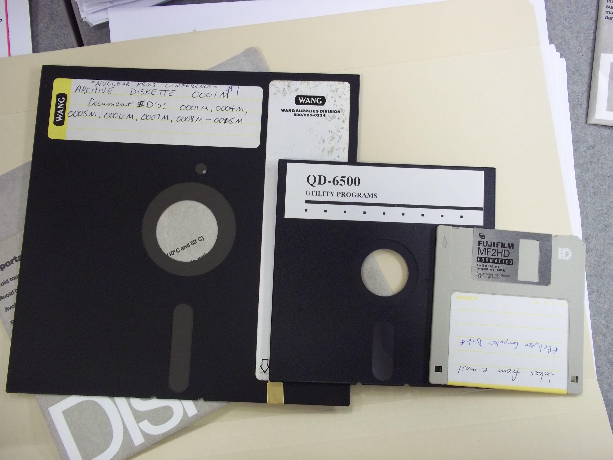

BytesOfProgress
Wiki
Floppy Disks
Floppy disks were once a popular form of magnetic storage media for personal computers. They consist of a thin plastic disk coated with a magnetic material enclosed in a protective casing.

Floppy disks had limited capacity, usually ranging from 1.44 MB to 2.88 MB, making them suitable for storing small amounts of data such as documents, images, and software programs.
The standard size for floppy disks was 3.5 inches, although older formats, such as 5.25-inch and 8-inch disks, were also used in the past.
Floppy disks were characterized by their slow data transfer rates and susceptibility to damage from physical handling, dust, and magnetic fields.
While floppy disks have largely been replaced by other storage technologies, they played a significant role in the early days of personal computing and remain a nostalgic symbol for many computer enthusiasts.
Lifespan and Care
Lifespan: Floppy disks are prone to degradation over time, and their lifespan can vary depending on storage conditions and usage. Proper care, such as storing them in a cool, dry environment away from magnetic fields and handling them gently, can help prolong their lifespan.
Care: Handle with care to avoid bending or scratching the disk surface, keep away from magnetic sources, store in a protective sleeve or case to prevent dust accumulation and physical damage.
back